Parallel Transport
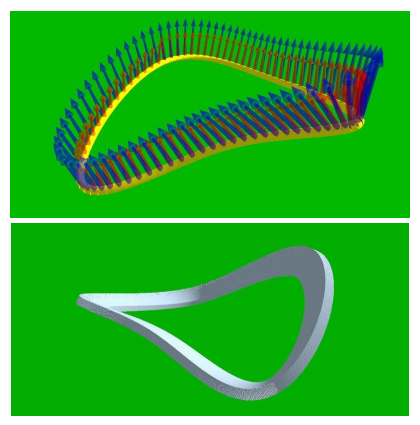
Controls:
4: Four-Point subdivision
5: J-spline preserving most area
6: Cubic B-spline
7: Quintic B-spline
8: Quadratic B-spline
0: Disable subdivision curve
=: Increase subdivision amount
-: Decrease subdivision amount
C: Toggle control polyloop visibility
V: Toggle 2D/3D rendering
B: Toggle parallel transport frame visibility
N: Toggle road visibility
Concept:
Using a general subdivision sheme (J-spline) we can create curves of different properties, often trading off interpolation with smoothness. This project demonstrates a Rotation Minimizing Frame using these curves.
Credits:
Paper Referenced: "Computation of Rotation Minimizing Frames"
Base Code: Prof. Jarek Rossignac
Processing.org
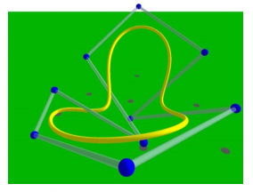
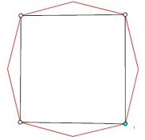 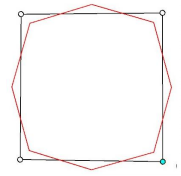 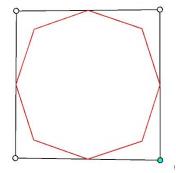 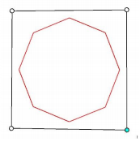 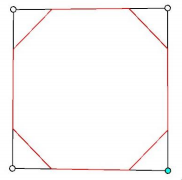
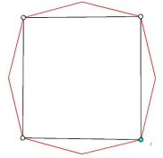 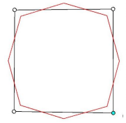 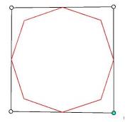 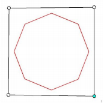 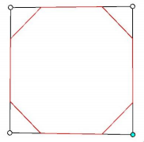